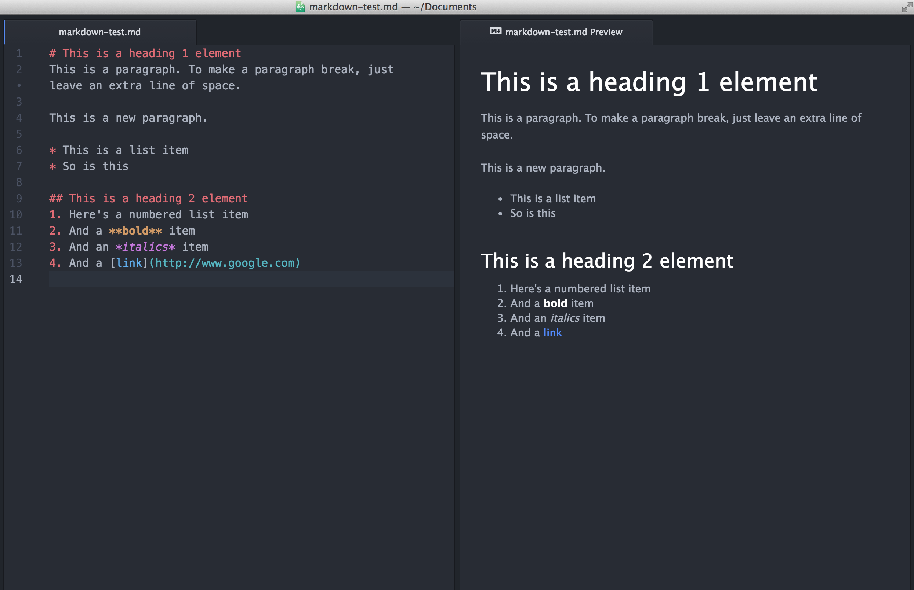

Chapter 4 Markdown
Markdown is a lightweight markup language, which basically means that it allows you to easily create italics, boldface, links, images, and bulleted/numbered lists. Markdown is faster than Word for most kinds of writing, but the best part is that a Markdown file can become a Word doc, a PDF, an HTML file, a slide show, an MLA document–whatever!
You can find a Markdown tutorial at CommonMark.
4.1 Create a Markdown file
Make your first Markdown file in Atom by following the steps below.
- In Atom, choose File => New file.
- Save the file as a Markdown file by choosing File => Save. Name the file markdown-test.md. Be sure to use the .md suffix.
Paste the text below into the file, then save the file.
# This is a heading 1 element This is a paragraph. To make a paragraph break, just leave an extra line of space. This is a new paragraph. * This is a list item * So is this ## This is a heading 2 element 1. Here's a numbered list item 2. And a **bold** item 3. And an *italics* item 4. And a [link](http://www.google.com)- Now, to see the output, look for the Packages menu in the menu bar (File, Edit, View, etc.) at the top of the screen. Click Packages, then choose Markdown Preview. You should see a preview window like the one below.
 That’s it! Markdown is that simple. If you want to learn more, use the Markdown cheat sheet. Soon, we’ll learn how to convert Markdown to a nice pdf or html document–and how to paste perfectly formatted writing into emails, newsletters, Google or Word docs, and more.
4.2 Convert Markdown to HTML, Word, or PDF formats
Markdown’s greatest feature is that Markdown content can become pretty much any other kind of content. Your Markdown can become a web page, a Word doc, a PDF, an MLA paper, an ebook (like this one!), a slideshow–whatever.
HTML
HTML is the language of most web pages. Generally, each web page on a site consists of a single .html file. To convert your Markdown into HTML,
- In Atom, make sure you’re viewing your Markdown file. Open Markdown Preview by selecting Packages => Markdown Preview => Toggle Preview.
- Right-click some blank space in the preview window and select Save As HTML. Atom will give you the options of renaming your file and selecting a save location. Be sure the filename ends in
.html(if you see something likefilename.md.html, you can delete the.mdpart). Save it to your documents folder (or wherever). - Find your new HTML file on your computer, and double-click it to open it in your web browser. If you want to view or edit the HTML file, simply open it in Atom!
Pasting HTML into Medium
In most cases, you can paste your HTML into Medium with no errors. Simply open the HTML file in your browser (step 3 above), then copy the entire document to your clipboard. Paste the copied content into the Medium editor.
Word or PDF
To convert your Markdown to Word or PDF format, you’ll need Atom’s pandoc-convert package. See Setting up Atom and installing packages. To convert your Markdown,
- In Atom, make sure you’re viewing your Markdown file.
- Press
cmd+shift+p(Mac) orctrl+shift+p(Win) to open the Command Palette. - In the Command Palette textbox, type pandoc docx (for Word) or pandoc pdf (for PDF). When you see the option you want, click the option or press return.
- Atom will give you the options of renaming your file and selecting a save location. Be sure the filename ends in
.docxor.pdf(if you see something likefilename.md.docx, you can delete the.mdpart). Save it to your documents folder (or wherever). - Find the new Word or PDF doc on your computer and open it!
MLA
Want to acheive perfect MLA formatting every time? Try markdowntomla.com!
You can also use Markdown to make slide decks way faster than you could with PowerPoint. Deckdown is a good place to start, but once we learn HTML and GitHub, we can add images, videos, etc.
4.3 Cheat sheet
This cheat sheet comes from Matt Cone at markdownguide.org. You can also find a cheat sheet within Atom by clicking Packages => Markdown Writer => Open Cheat Sheet.
| Element | Markdown Syntax | Atom Shortcut |
|---|---|---|
| Heading |
# H1## H2### H3 |
|
| Bold |
**bold text**
|
b tab
|
| Italic |
*italicized text*
|
i tab
|
| Blockquote |
> blockquote
|
|
| Ordered List |
1. First item2. Second item3. Third item
|
|
| Unordered List |
- First item- Second item- Third item
|
|
| Code |
`code`
|
code tab
|
| Horizontal Rule |
- - -
|
|
| Link |
[anchor](https://www.example.com "title")
|
l tab
|
| Image |

|
img tab
|